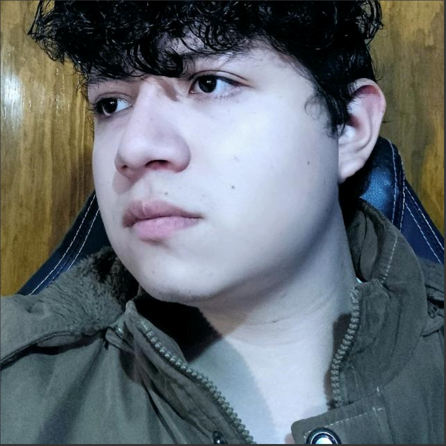

My Resume

JR DEV 🖥️| Musician for Hobbie 🎸
Summary
My name is Elliot Eusebio Olvera Negrete. I am 20 years old and actually live in Mexico City. I am a computer engineer studend who loves web developing and many other programming stuffs. Since I was 14 I have been programing so i think this is a perfect time to show my skills to the world and look for an oportunity.
Education
- specialized computer technician (2021)
- accounting administration assistant (2017)
Work experience
- Coordinated a vacation course for children, emphasizing the significance of faith in their lives and fostering a deeper understanding of the importance of spirituality.
- Developed numerous optimization programs for my university, contributing to enhanced operational efficiency and performance across various departments.
- Administered the hall database of a small enterprise with four branches, overseeing the organization's data management system to ensure seamless operations across all locations.
- With over 4 years of experience in accounting, I have played a pivotal role in the financial management of a small transportation service. My expertise spans from maintaining financial records to overseeing ticket sales and efficiently managing seat assignments, contributing to both financial efficiency and customer satisfaction.
Skills
Soft Skills
- Communication
- Problem Solving
- Leadership
- Team Collaboration
- Project Management
Hard Skills
- Java - 80%
- Python - 80%
- C - 90%
- MATLAB - 70%
- Office - 100%
- HTML - 60%
- SQL - 80%
- AWS - 50%
Certifications
- MATLAB Onramp - Symulink (2023)
- DELF A1 French (2017)
- PET B1 English (2017)